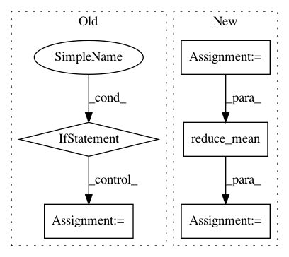

f55217e5fee88bc38e58e62e886f79e561c4d069,texar/losses/losses_utils.py,,reduce_batch_time,#Any#Any#Any#Any#Any#Any#,110
Before Change
sequence = sequence / tf.to_float(sequence_length)
if reduce_batch:
sequence = tf.reduce_sum(sequence, axis=[0])
if average_across_batch:
sequence = sequence / tf.to_float(tf.shape(sequence_length)[0])
return sequence
def reduce_dimensions(tensor, average_axes=None, sum_axes=None, keepdims=None):
After Change
sequence = tf.reduce_sum(sequence, axis=[1])
elif average_across_timesteps:
if sequence_length is None:
sequence = tf.reduce_mean(sequence, axis=[1])
else:
sequence = tf.reduce_sum(sequence, axis=[1])
if average_across_timesteps:
sequence = sequence / tf.to_float(sequence_length)
if sum_over_batch:
sequence = tf.reduce_sum(sequence, axis=[0])
elif average_across_batch:
sequence = tf.reduce_mean(sequence, axis=[0])
return sequence
In pattern: SUPERPATTERN
Frequency: 4
Non-data size: 5
Instances
Project Name: asyml/texar
Commit Name: f55217e5fee88bc38e58e62e886f79e561c4d069
Time: 2018-08-14
Author: zhitinghu@gmail.com
File Name: texar/losses/losses_utils.py
Class Name:
Method Name: reduce_batch_time
Project Name: analysiscenter/batchflow
Commit Name: 11090e7cee138b00570d4afc09cb5779a95df131
Time: 2019-09-03
Author: Tsimfer.SA@gazprom-neft.ru
File Name: batchflow/models/tf/layers/core.py
Class Name: BaseDropout
Method Name: __call__
Project Name: reinforceio/tensorforce
Commit Name: 98fe0142e39af4a9a2450ca3f3e48a53152f5091
Time: 2016-12-29
Author: k@ifricke.com
File Name: tensorforce/updater/deep_q_network.py
Class Name: DeepQNetwork
Method Name: create_training_operations
Project Name: NVIDIA/OpenSeq2Seq
Commit Name: 44ae6129731ee1d225db8a5f1bafea5fd4b9b542
Time: 2019-02-06
Author: boris.ginsburg@gmail.com
File Name: open_seq2seq/parts/transformer/common.py
Class Name: LayerNormalization
Method Name: call